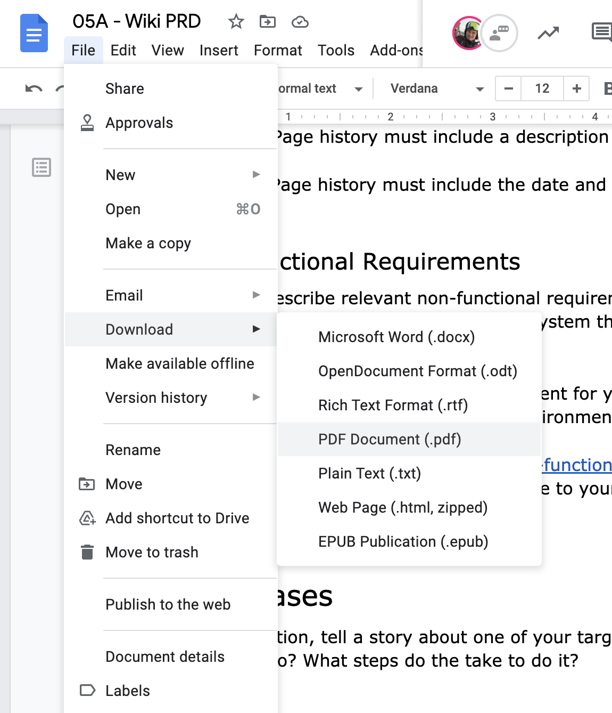

In this milestone, you'll reflect on the wiki project as a group. What worked well? What did you learn? What would you do differently next time?
The goal of a retrospective is to document what happened, identify what went well, what could have been better, and plan what might be done differently next time.
Create a document and share it with your teammates. Add the following headings:
Work with your group to fill these out.
Most importantly, this exercise should be blameless. Focus on identifying the contributing causes (What happened? What assumptions were made? What expectations were there?) without indicting any individual or team for bad or inappropriate behavior. Assume that everyone involved in an incident had good intentions and did the right thing with the information they had.
Your retrospective should be targeted at your classmates. Also imagine any future cohorts of students who might be able to learn from your experience.
List the main events of the project and their dates in chronological order. The project milestones may be a good starting point for this section. You may also want to use the git commit history as a reminder of what work was done and when.
Once you have listed the main events, each of you may share their general feeling of how things went. See: https://www.funretrospectives.com/the-peaks-and-valleys-timeline/
Identify the things that really worked well. These could be technical solutions, team process (emails, meetings, chat, pair programming), or anything else that helped the project be successful.
Identify the things that didn't work as well as you'd hoped. These issues could be technical, team process, or anything else that prevented the project from being as good as you'd hoped it would be.
What would you do differently next time you build a project like this? What would you tell students who are just starting their wiki projects?
To turn in this assignment, share an exported PDF copy of your Retrospective in your wiki project repository in GitLab.
Download a PDF copy of your PRD document to your computer. Navigate to File -> Download -> PDF Document in the Google Docs menu.

Note: Cloud Shell Editor may not be able to render the PDF. That's OK. You'll verify the file was correctly uploaded in a later step.
git add wiki-retrospective.pdf
git commit -m 'add wiki retrospective'
git push origin main